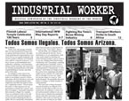

Submitted on Wed, 06/09/2010 - 2:49pm
 The IWW Starbucks Workers Union is proud to celebrate the sixth anniversary of our campaign for fair wages, consistent scheduling, a healthier and safer workplace, and a voice on the job at the world's largest coffee chain. As we enter our sixth year of struggle, we leave behind us a year marked by the continued rapid deterioration of working conditions at Starbucks: the doubling of our health insurance costs, massive layoffs, reduced staffing, and the continued disregard of greedy company executives for the well-being of hard-working Baristas and their families? even as Starbucks achieves record profits of $760.3 million in the last 12 months. This represents a profit of roughly $5354 from each of Starbucks 142,000 workers. Rather than return the wealth of our labor
to hard-working Baristas who are living in poverty, Starbucks executives issued the first-ever dividend to shareholders, further enriching the financial class that has driven our world to ruin in the worst economic crisis since 1929. However, even as conditions continue to worsen in corporate management's greed-fueled race to the bottom, our movement for justice at work continues to gather strength. We now take a moment to
celebrate our victories as we prepare for the battles to come.
The IWW Starbucks Workers Union is proud to celebrate the sixth anniversary of our campaign for fair wages, consistent scheduling, a healthier and safer workplace, and a voice on the job at the world's largest coffee chain. As we enter our sixth year of struggle, we leave behind us a year marked by the continued rapid deterioration of working conditions at Starbucks: the doubling of our health insurance costs, massive layoffs, reduced staffing, and the continued disregard of greedy company executives for the well-being of hard-working Baristas and their families? even as Starbucks achieves record profits of $760.3 million in the last 12 months. This represents a profit of roughly $5354 from each of Starbucks 142,000 workers. Rather than return the wealth of our labor
to hard-working Baristas who are living in poverty, Starbucks executives issued the first-ever dividend to shareholders, further enriching the financial class that has driven our world to ruin in the worst economic crisis since 1929. However, even as conditions continue to worsen in corporate management's greed-fueled race to the bottom, our movement for justice at work continues to gather strength. We now take a moment to
celebrate our victories as we prepare for the battles to come.
In the past year, we gained members and took action to win our demands and build power on the job on shopfloors across the world. The Starbucks Workers Union expanded to Canada as Baristas in Quebec City joined the IWW in response to Starbucks new Optimal Scheduling system, which forces students to choose between keeping their jobs and staying in school, and pressures working parents to choose between their children and their
careers. In the United States, we have continued to gain ground in our fight to defend our right to organize, with Starbucks cornered into signing its sixth settlement agreement with the National Labor Relations Board pledging to end its anti-union misconduct. We gained valuable public support thanks to our new allies at Brave New Films, who launched a social media campaign to raise awareness of Starbucks' repeated and intentional violation for our right to organize. A YouTube video about
the Starbucks Workers Union filmed by Brave New Films was viewed over 80,000 times, forcing a response from Starbucks. In New York, Starbucks was hit by yet another NLRB legal complaint, increasing pressure on company bosses to respect our right to association.
Submitted on Wed, 06/09/2010 - 2:44pm
 Members of the Philadelphia General Membership Branch of the Industrial Workers of the World will picket the German Consul during his appearance at the Union League (140 South Broad St.) Thursday at noon to speak to members of the German-American Chamber of Commerce. This is the second action held in Philadelphia protesting escalating violations of basic labor rights in Germany.
Members of the Philadelphia General Membership Branch of the Industrial Workers of the World will picket the German Consul during his appearance at the Union League (140 South Broad St.) Thursday at noon to speak to members of the German-American Chamber of Commerce. This is the second action held in Philadelphia protesting escalating violations of basic labor rights in Germany.
Consul General of the Federal Republic of Germany Dr. Horst Freitag will be speaking in Philadelphia as a German appeals court meets to hear an appeal by the Free Workers Union (FAU) against a court order barring them from exercising basic labor rights, including describing themselves as a union, appealing to the public to support their members engaged in industrial disputes, or seeking to negotiate with employers for better conditions.
Submitted on Wed, 06/09/2010 - 2:32pm
Originally posted here

To friends and comrades in Greece,
On Thursday, May 13 a dozen of us held a demonstration against the Greek Consulate in Chicago. We want to remind you that even in the most difficult times, you have the active solidarity of uncounted others around the world. A vast subversive project is still taking shape everywhere, however slowly, and your struggle is one node among many.
Repression may be raging against you there, and our numbers here might be small, but the important thing to remember is that you've found your resonance. This resonance spreads around the world, laying foundations for real connections and the deepening of struggles.
Submitted on Tue, 06/08/2010 - 11:19am
Orginally Published for RVAnews [ http://rvanews.com/news/public-bus-users-fight-increasing-fares-route-cuts/28781 ]
Public bus users fight increasing fares, route cuts
by Erica Terrini
June 8, 2010
.Rushing down East Broad Street on a Wednesday morning, 19-year-old Laura McWilliams dons her work uniform and a smile as she talks about her son, who she supports with her job on Virginia Commonwealth University’s MCV Campus.
As a life-long rider, McWilliams says she relies on the Greater Richmond Transit Company (GRTC) to get to work every day, traveling approximately 20 minutes from her apartment in Henrico Country to Downtown Richmond.
The roaring engine of the GRTC bus can be heard almost as soon as it becomes visible, and for many riders like McWilliams, the far off sound is as routine as their morning cup of coffee. However, with proposals of increasing fare prices and inaccessibility by cutting routes, public transportation is taking a back seat when it comes to funding, and commuters are beginning to notice.
Submitted on Tue, 06/01/2010 - 10:12am

Headlines:
- Todos Somos Illegales. Todos Somos Arizona.
- Update on FW Alex Svoboda's Legal Case
- Transport Workers Strike in South Africa
Features:
- Finnish Labour Temple Celebrates 100 Years
- Fighting Rio Tinto's Borax Mining Industry
- International IWW May Day Reports
Download a free PDF copy of this issue.